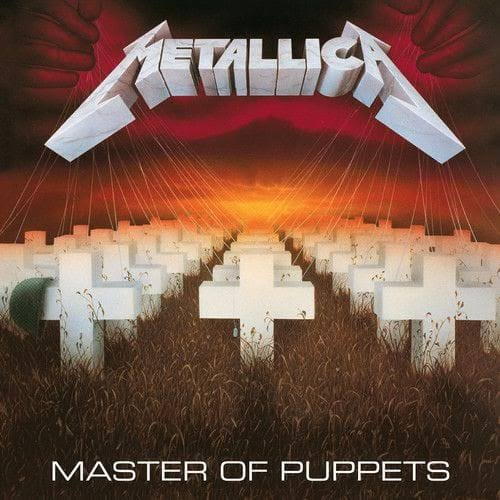

PÓS-PUNK
A história por trás da capa de Unknown Pleasures
Descubra a origem de uma das capas mais reconhecidas da história da música.
LER MAISSeu assistente pessoal de descobertas musicais. Uma curiosidade nova a cada descoberta.
Clique no botão abaixo para revelar uma curiosidade escondida no universo da música.
AGUARDANDO COMANDO...
Conheça um pouco da história de um dos discos mais marcantes do movimento grunge e entenda sua influência na música alternativa.
LER MATÉRIA
Descubra a origem de uma das capas mais reconhecidas da história da música.
LER MAIS
Conheça a importância de um dos trabalhos mais conhecidos do Metallica.
LER MAIS
Entenda algumas das características que tornaram a banda tão influente.
LER MAIS